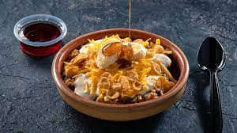

Masoob
Ingredients
- 4 pieces of bread
- 1 kilo of bananas
- 1/4 cup honey
- 2 cans of cream
- 1 cup warm water
- 1 tablespoon vegetable oil
- pinch of salt
Recipe
- In a food processor, put the bread after slicing it, then add the bananas and chop the mixture well.
- Add half the amount of cream with two tablespoons of honey and mix again.
- Add the ghee, stir well, then spread the mixture in a serving dish.
- Distribute the rest of the cream, add a little honey, and serve.